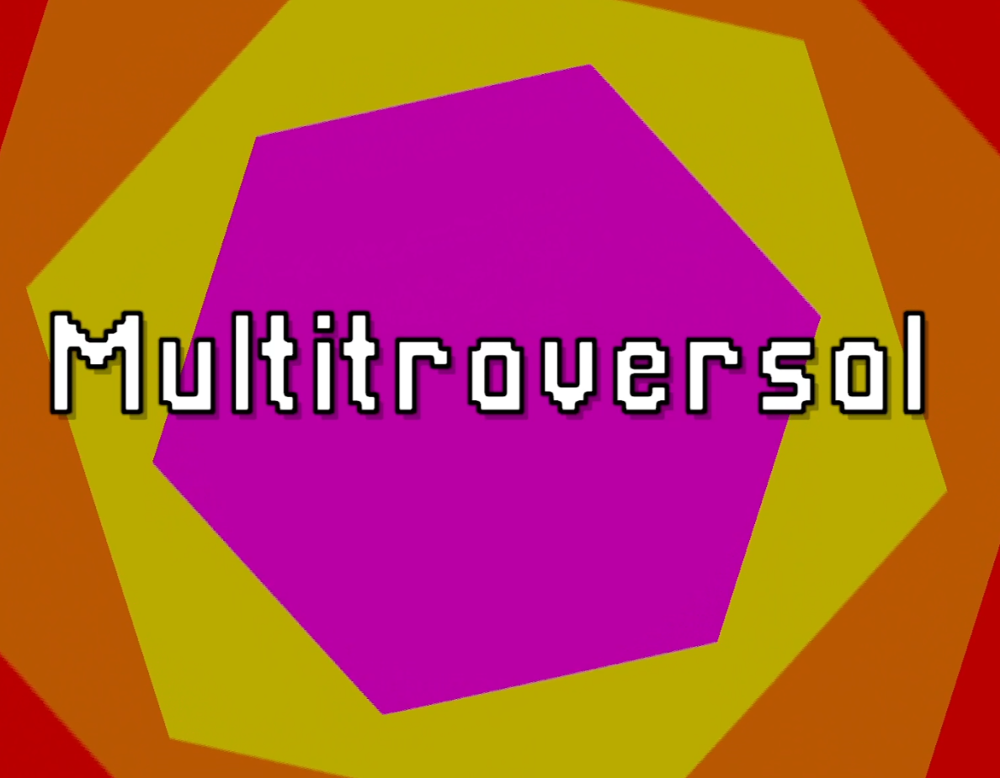
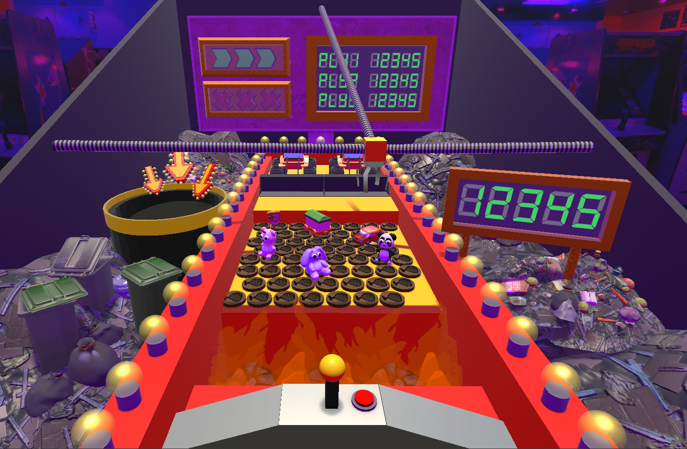
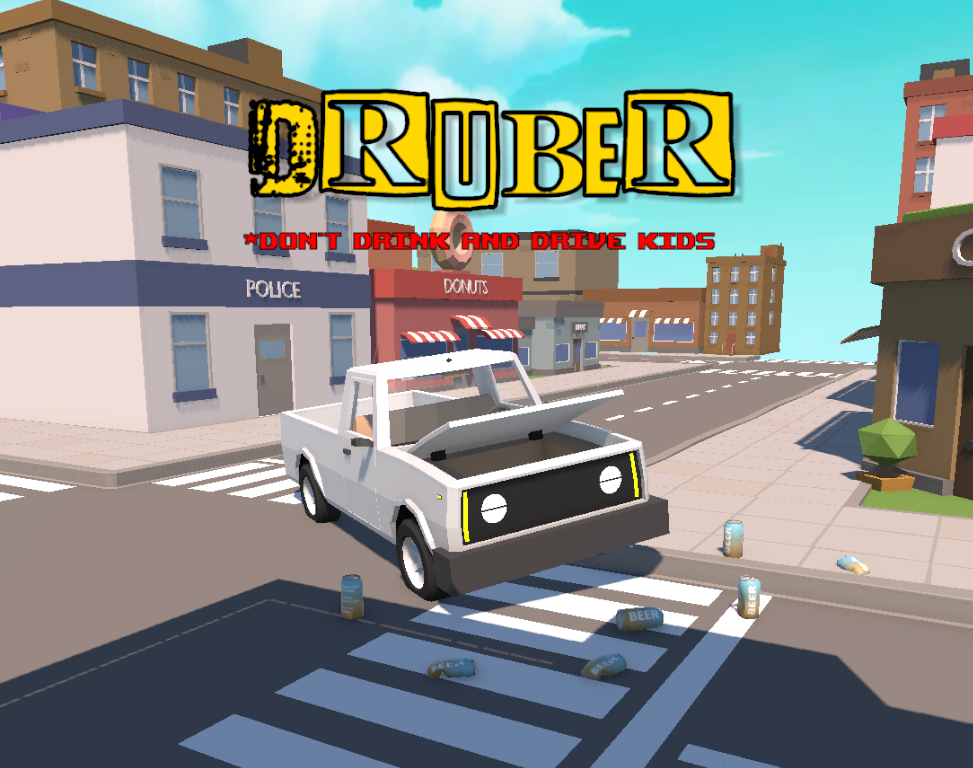
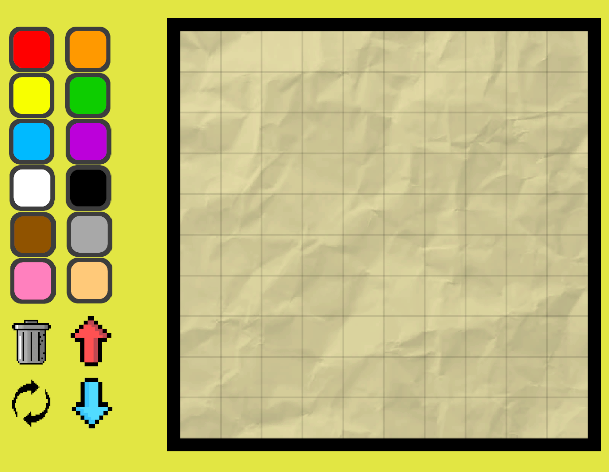

June 2026
MultiTraversal is a 3D survival game focused on exploration, progression, and resource management. Players journey through dangerous dimensions to collect resources, fight monsters, and discover unique loot before returning to their laboratory to complete quotas and craft equipment for future expeditions.
For this project I pitched the game idea, led a development team and programmed core gameplay systems and mechanics in Unity using C#.


The Clawwww is a mechanical arcade style game. Save the toys by grabbing them with the claw before the machine pushes them into the fire!
This project was developed by myself and a team in Unity using C#. I contributed to scene design and core gameplay systems and implementations

Druber is a chaotic physics-based driving game where players deliver passengers while managing an intentionally unstable vehicle. Players collect pickups along the road to maintain their run, balancing risk and control as the driving becomes increasingly difficult.
I built the core gameplay systems, driving mechanics, and progression loop in Unity using C#.

"Draw It!" is an art expression game, where players can draw with shapes along a 10x10 grid. Color, rotate, resize, and layer your shapes to make your desired image! The take a picture and share with friends!
I built the core mechanics within Unity using C#